O que devo levar para escolher meus óculos de grau?
Traga sua receita médica e, se já usa óculos, leve o par atual.
NOSSA SELEÇÃO
Conforto para ver. Liberdade para ser. Conheça os modelos em destaque e consulte a disponibilidade com a equipe.
MODELOS EM DESTAQUE
Consulte modelos, cores e disponibilidade com a equipe da loja.
12 modelos em destaque
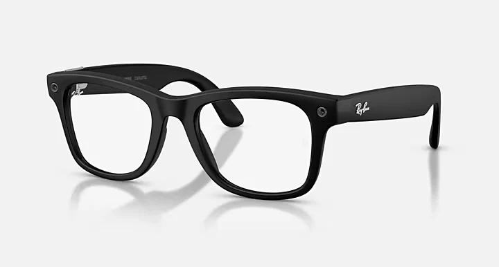
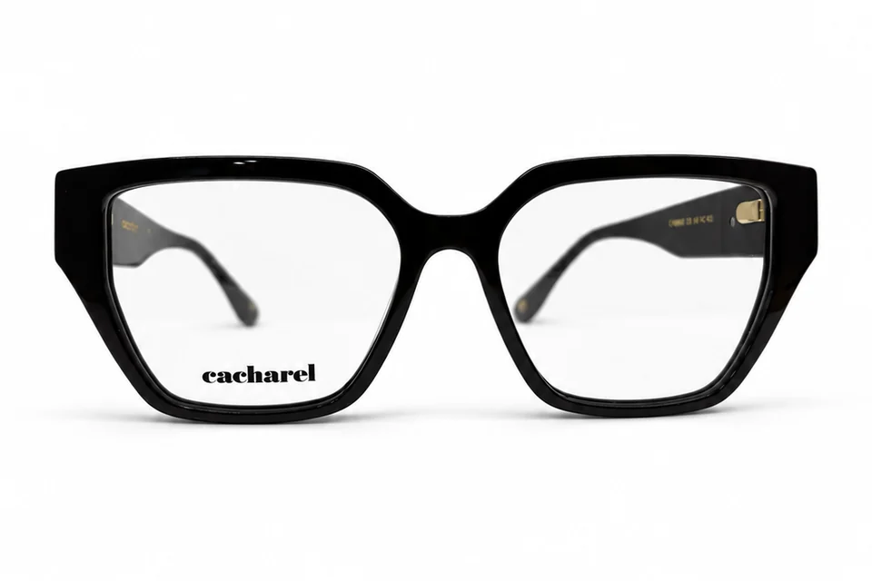
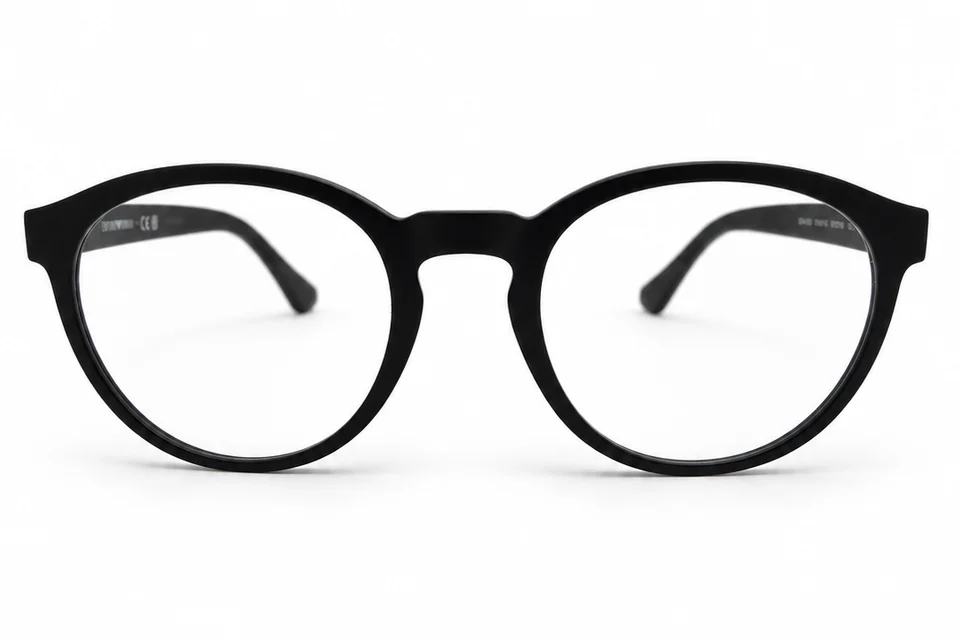
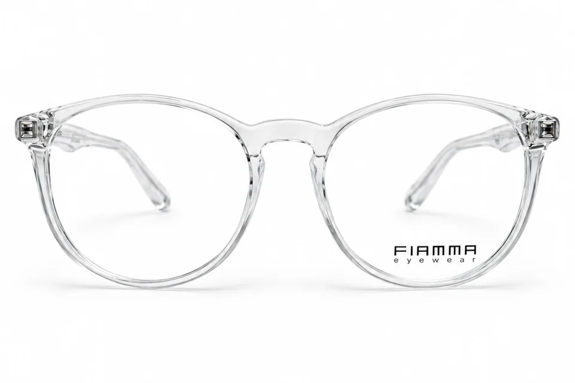

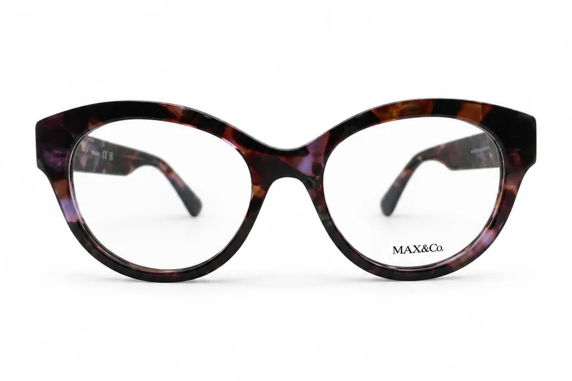
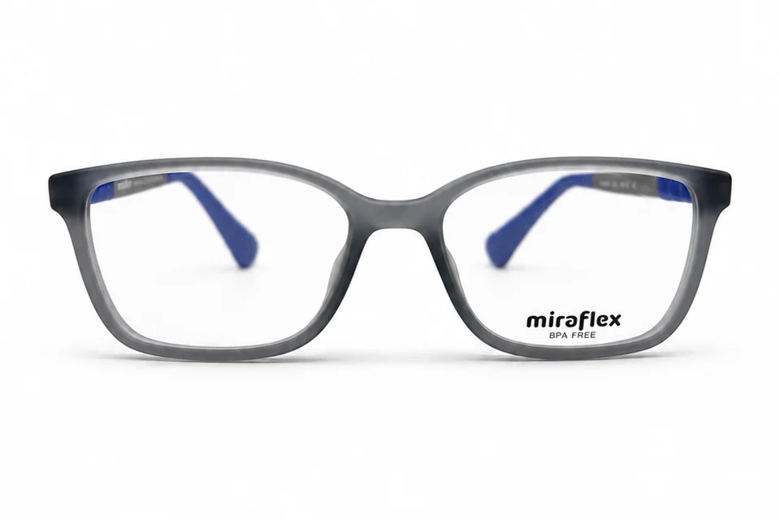
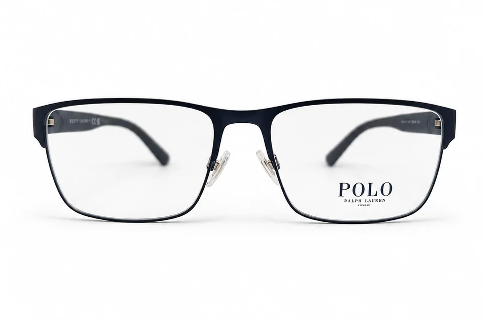
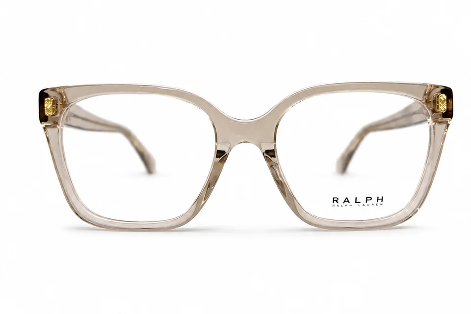
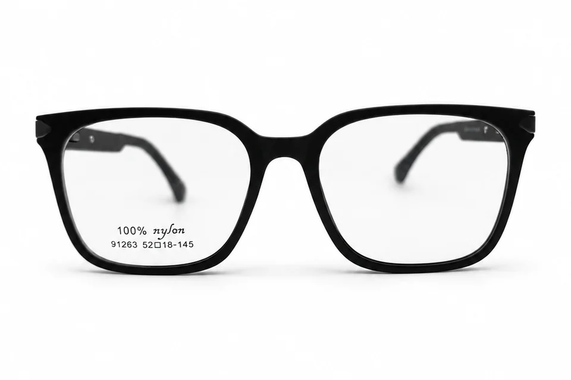
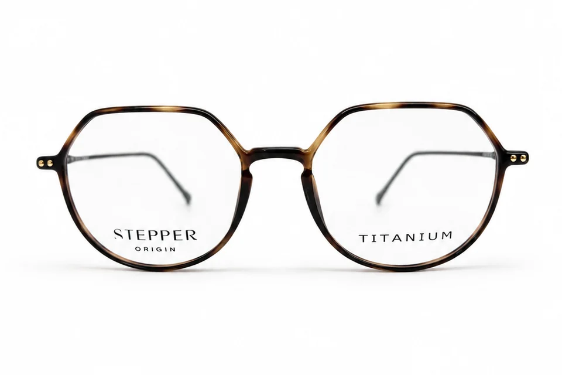
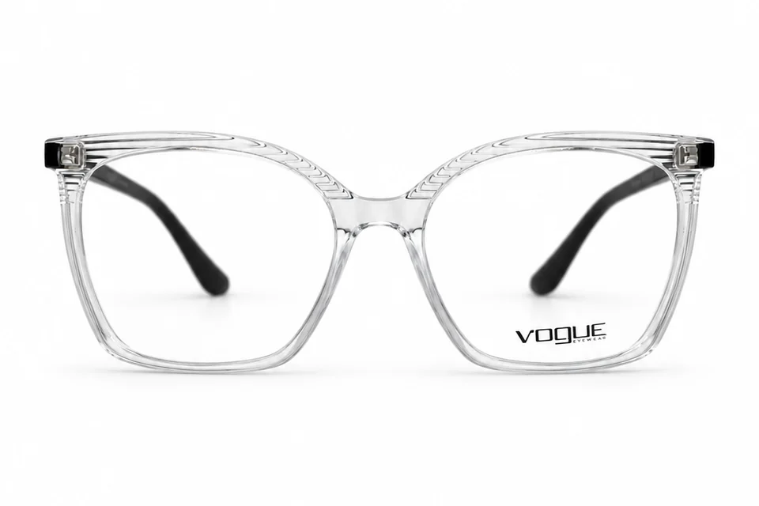
Nenhum modelo corresponde a estes filtros. Experimente outra combinação ou fale com a Pupila.
EXPERIÊNCIAS DE CLIENTES
O que os clientes contam sobre o atendimento na Pupila.
MARCAS NA PUPILA
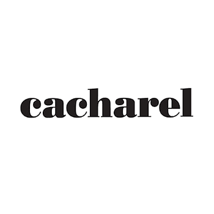
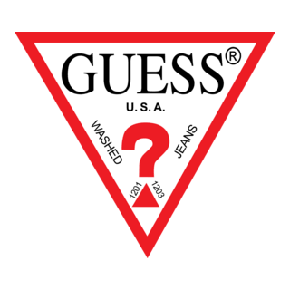
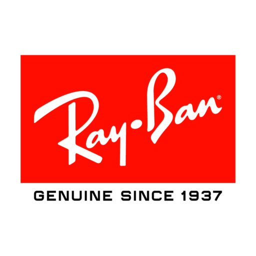
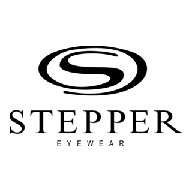
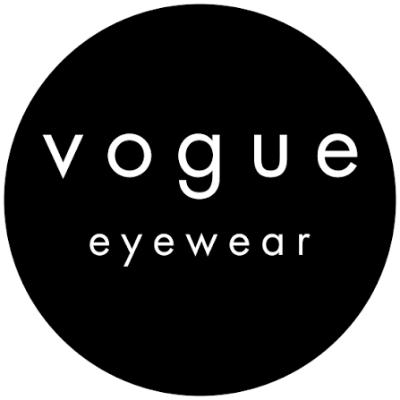
VAMOS ENCONTRAR O SEU PRÓXIMO OLHAR?
De perto, cada detalhe faz a diferença. Venha para a Pupila.